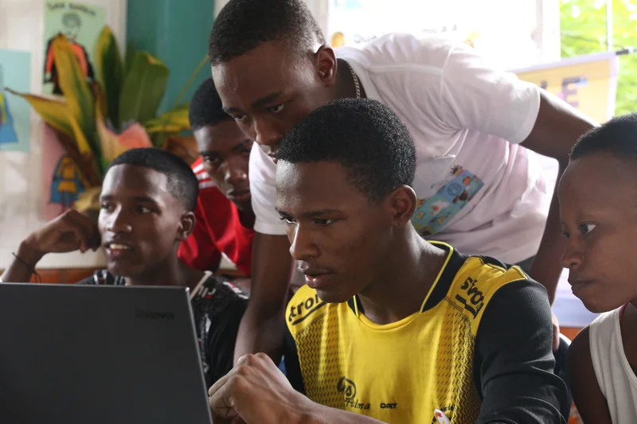
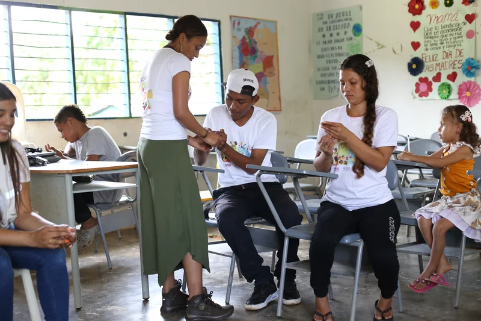

Partnering with more visible entities
Hi, I’m Belén. I don’t know much about technology, but I love people and I’m very good at building relationships with them. I arrived at SOLE some time ago and I have learned a lot about the power of people and what we can achieve when we come together.
What does it mean to partner with places that convene?
There are many people and organizations that can make your message reach further and clearer, and that can make your projects a path for transformation in your community. Knowing how to reach them and get their attention is a way to join forces to achieve great things.
What is it for?
Often, you want to count on your community to do things, or learn together, and you find it difficult to find people to join the movement, or you end up doing things with the same people.
With these recommendations, you can learn how to approach others so they support the call to action in your community.
What do you need?
- Courage
- Curiosity and listening skills
- Something to take notes with
How to do it?
Step 1 → Define the purpose of the call. It will be easier to find allies
The first thing is always the reason why you are going to do what you are going to do. If you intend to partner with others, you must be clear about the purpose of what you are going to do with them; only then will you be able to focus well on the search for those who can help you convene.
For example, if you are looking for people to build an antenna, would it be better if you look for them in a hardware store, during the workday, or at the exit of a kindergarten? Perhaps it is a better place where people go to find materials to build things, or tinker. The owner of the hardware store might be a better ally than the school teachers for the call to build an antenna.
Although you should not underestimate the talent of your community, you can prioritize the people and places you want to convene with a ‘why’ that is very clear.
If you can, define your proposal in detail: is it an event, or a series of events? What do you need to have, or buy, or what do you need to equip your purpose with? Do you need to count on more people, or are you going to do it alone?
Step 2 → Locate those who convene, who they are and what they do
Look around you: in your neighborhood, in your community, in your town… you might even have allies in your own home!
Recognizing people and organizations with the capacity to convene, and partnering with them, is strategic to achieving what we want.
Think of people and places where there is a flow of people, people who talk to the community, think of those who organize events. These types of actors will be relevant for convening… keep your purpose in mind so you can better see who has contact with the people you want to convene.
It is worth asking ourselves how we can build networks to achieve a successful call to our activities. If you work on consolidating your skills to join forces with others, you will start to see how it flows better and better for you.

Photo: SOLE ColombiaStep 3 → Read the interests of those who convene and how they resemble yours
Just as you want to organize a specific event, for example, holding a SOLE, other people also have specific interests in the activities they want to promote.
Think about what catches the attention of each of these actors and how you can address both their interests and yours: including the other in a negotiated agenda can win you a long-term ally, and not just a momentary collaborator.
For example, if your interest is to create the habit of holding SOLEs in your community, you can partner with the Local Action Board (JAL). Understanding how to use the Internet as a group to learn things together can meet the JAL’s objectives related to the planning and execution of community development projects, or the guarantee of digital rights for the community; it is a nice way to open the conversation about the activity you want to organize and how the JAL can support the call for your event.
Step 4 → Choose who you want to do what with
Now that you have recognized the strategic actors to convene, and you know how to align their objectives with yours, choose the one you feel most comfortable working with for each of the objectives you have.

Photo: SOLE ColombiaStep 5 → Work on the invitation and the message you want to share
Propose your ideas and prioritize them. Developing each of the ideas you have in a deep way and finding the best way to present them to your ally is a way to practice your speech and the way in which the information can reach them best.
You can make a script of the possible questions and answers that may arise in the conversation. Put yourself in all possible scenarios, take into account the objections and problems that your ally may have regarding your proposal. Having most of the scenarios contemplated, with a possible answer or alternative solution, will make your proposal look strong and consolidated.
Proposing a meeting to show your ideas with order and calm is an excellent way to guarantee the attention of your potential ally. Agree with the person or people who can give a ‘yes’ to your proposal, be punctual for that appointment, and prepare the meeting well.
Work on the order in which you are going to present the information: a careful and orderly speech will let your interlocutor know that you are clear about what you want to do and will give them confidence in counting on you.
Don’t forget to make it very clear:
- what you are inviting your ally to
- what you will do and what you need from your ally
- when you need it
- for how long
- who will be involved
- how communication will be between you
- how you are going to tell them what you have achieved thanks to the relationship that unites you
Step 6 → Find out how you can make your proposal
Some allies may be available to you at any time and place. Others have a more formal way of working, or need to make decisions by consensus. Others, even, need you to send a written document with your proposal before you can talk to someone.
Approach the person, organization, business, or any other ally and find out what the best way to present your proposal is. Follow the instructions and organize your time to be able to respond to the requirements on time.
Step 7 → Present your proposal and listen to your counterpart, the goal is to reach an agreement**
It’s time to show everything you’ve worked on! Trust yourself and the rigor with which you have prepared your proposal; we are sure that at this moment, with all the information you have, you will find the words to tell a good story that hooks your ally into doing things together.
Once you have stated your point, listen carefully to your potential ally. There may be information you haven’t considered, so take note of the points that are weak or need to be expanded.
It is also possible that there will be a moment of negotiation: you and your ally should have a scenario where both can win. Open your eyes and ears to anything that might have value for their purpose and strive to create a solid relationship.
Step 8 → Formalize the commitments and let’s get to work!
The moment your potential ally has everything clear and so do you, it’s time to agree and clarify the next steps!
Leave in writing what each one commits to and what the next steps are; it is always better that nothing is forgotten.
Thank the people who have attended to you; starting to work together is just the beginning, and celebrating having reached agreements is a way to honor this new relationship.
Other possible internets
You will know that you have been successful in contacting places that convene the moment you start speaking the same language and find common ground in the conversation.
For example, when someone who can convene others pays attention to the proposal you present and wants you to meet their manager, or a colleague who can help you convene people. Or also, when you find yourself adapting what you are going to say to the interest of the person who is listening to you, creating a space where the ideas start to belong to both of you.
If you exercise your listening skills, you will soon be recognizing people with the capacity to convene and seeking to interest them.
If your purpose is to do a SOLE, you can start thinking about your Self-Organized Learning Environment as a place where several allies can start to fulfill their purposes thanks to your space, or, conversely, you can think of your ally’s space as a SOLE and benefit the people your ally convenes so that they learn to use the Internet as a group to live better together.
You can SOLE any activity or space!
What can you achieve with this solution?
These recommendations are simple and limited. When you go to look for allies, a large part will depend on your communication skills.
Remember that you will not always manage to convince everyone to work with you; the important thing is to do it many times: ‘practice makes perfect’. And, at the same time, listen to your intuition to start creating a ‘radar’ in yourself that warns you of people who can be your allies… stay alert!
Related solutions
Remember that in Voltaje ⚡⚡ you can find many more solutions to connect without fear of using the internet as a group. Go ahead and keep browsing! See more solutions →